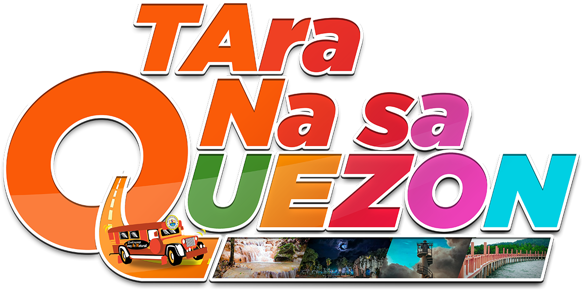

City of Tayabas
Tayabas traces its roots to pre-colonial barangay communities led by chiefs and elders, with Franciscan missionaries founding the town in 1578 to spread Christianity via the reduccion system. It thrived as a cultural hub during Spanish rule, earning the title "La Muy Noble y Siempre Leal Villa de Tayabas," but faced destruction in World War II bombings in 1945. The city status was granted in 2007 after a plebiscite, though legal challenges briefly affected it. The name "Tayabas" derives from Tagalog words meaning "place of peace" or abundance, linked to native trees, and it's famed for lambanog (coconut liquor) and sweets like cassava budin. Key sites include the 16th-century basilica, stone crosses, and heritage bridges like Puente de Malagonlong. The annual Mayohan sa Tayabas festival in May honors farmers and San Isidro Labrador with parades and harvest celebrations. As a 6th-class component city, Tayabas has around 112,658 residents across 66 barangays and lies near mystical Mount Banahaw, supporting tourism and coconut plantations. It's a landlocked area in CALABARZON, ideal for heritage road trips and eco-adventures.
(042) 713-2008
(042) 373-4290
09512181022
09178398434
(042) 793-3166
09985985739
(042) 421-4589
09321402703
(042) 788-0925
(042) 793-2216
09171356485
(042) 717-6323
